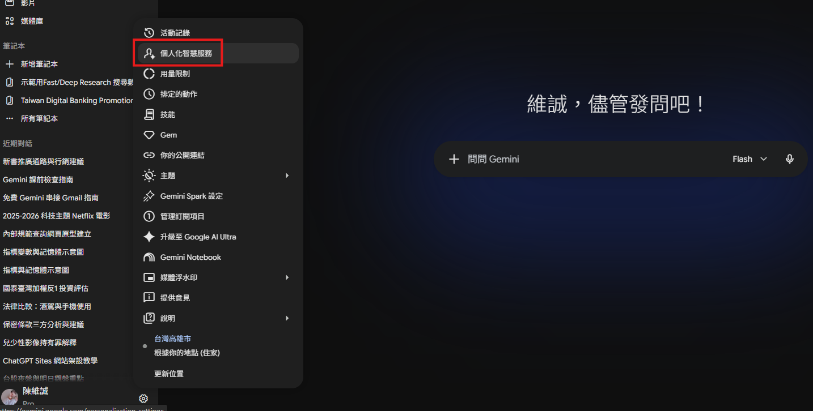
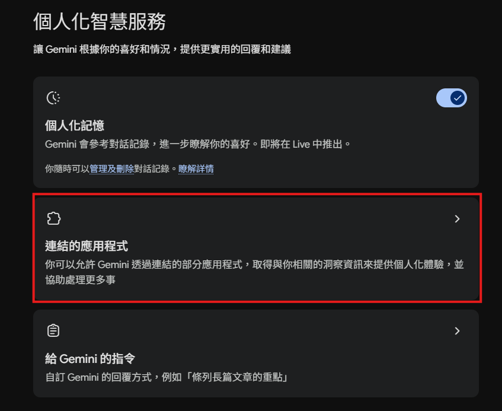
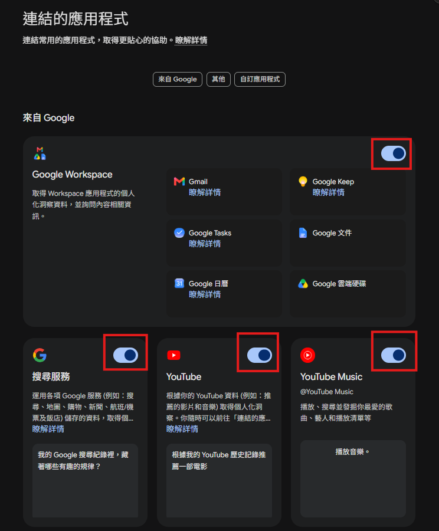
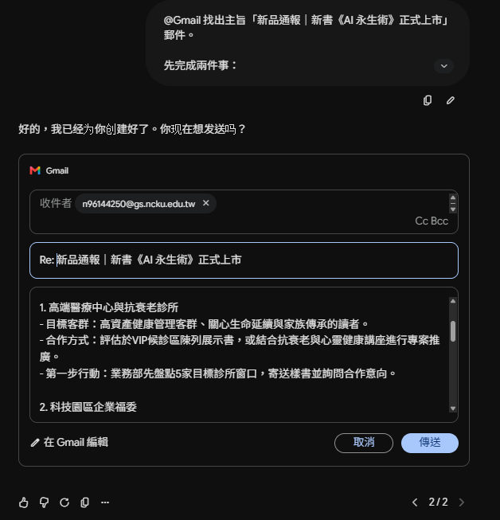
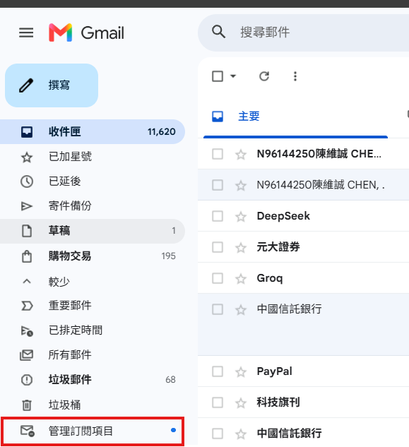
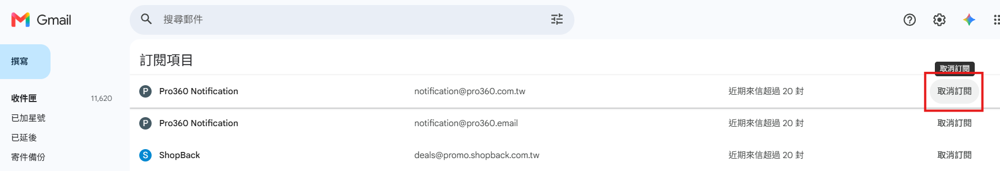

郵件管理術：Gemini × Gmail × Google Calendar¶
每天真正拖慢工作的，常常不是某一封特別困難的郵件，而是郵件不斷進來：客戶詢問、主管交辦、會議通知、供應商往來、電子報、系統通知。每封只花三分鐘，一天四十封就可能用掉兩小時。
AI 適合協助四類工作：
- 讀信：摘要長信與討論串，抓出行動事項。
- 擬信：根據原信、對象與語氣產生回覆草稿。
- 整理：跨信件搜尋、分類、抽取欄位及轉成表格。
- 管理：從信件建立日曆事件、整理訂閱與建立定期報告。
但 AI 不是郵件的最終責任人。寄件者、收件者、日期、數字、附件、承諾、付款方式與機密資料，都要由人確認後才能送出。



用 Gemini 快速生成 Email 回覆¶
範例：回覆新書《AI 永生術》新品通報¶
業務收到新書《AI 永生術》的新品通報。產品結合 AI 科技與健康長壽議題，需要提出有創意但可行的通路與行銷建議。
### 講師可以先發送給學生
主旨：新品通報｜新書《AI 永生術》正式上市
您好：
向您通報最新出版品《AI 永生術》，本書現已正式上市！
《AI 永生術》聚焦於 AI 技術與數位生命的發展，帶領讀者認識人工智慧如何保存個人記憶、聲音、影像與數位足跡，並進一步思考「數位分身」、「AI 復刻」與「數位永生」可能帶來的應用與影響。
📖 新書資訊
書名：《AI 永生術》
類型：人工智慧／科技趨勢
適合讀者：對 AI、數位科技與未來趨勢有興趣的讀者
上市狀態：新品上市
如果您正在關注生成式 AI 的最新發展，或想了解 AI 除了聊天、工作輔助之外，還可能如何改變我們保存記憶與延續數位身分的方式，《AI 永生術》會是一個很有意思的切入點。
歡迎參考新書資訊，也期待與您分享更多 AI 時代的新知！
謝謝您。
敬祝 順心
- 在 Gemini 輸入
@並選 Gmail。 - 貼上提示詞。
- 檢查 AI 找到的是不是最新一封信。
- 修改草稿直到內容符合需求。
- 最後才按寄出。
@Gmail 找出主旨「新品通報｜新書《AI 永生術》正式上市」郵件。
先完成兩件事：
1. 用 5 點整理原信已確認的產品資訊。
2. 列出原信沒有提供、不可自行假設的資訊。
接著以業務部同仁身分起草回覆信：
- 對象：產品部與業務部同仁。
- 目的：提出新通路及行銷配合建議。
- 可討論方向：高端醫療中心與抗衰老診所、科技園區企業福委、
Garmin／Apple Watch 等穿戴裝置合作、科技人群眾募或預購。
- 每項建議包含目標客群、合作方式與第一步行動。
- 不得捏造預算、合約、銷量或已談妥的合作。
- 語氣務實、直接、友善，300～450 字。
- 輸出主旨、稱呼、正文、結尾與待確認事項。

範例：回覆英文洽詢信¶
### 講師可以先發送給學生
標題：Book Delivery and Event Arrangements
Hi Wei-Cheng,
Thanks for the update. Everything looks good on our side.
We can confirm that the books can be delivered to the designated location before the event, so there should be no issue with the delivery arrangement.
We also like the idea of creating a landing page for the event. Please let us know what materials you need from us, and we will prepare them accordingly.
Regarding payment at the venue, could you please check with the climbing gym to see if Line Pay can be used there? If Line Pay is not available, we may need to handle most of the payments in cash.
Please keep us updated once you hear back from the climbing gym.
Best regards,
Emily
### 來信重點
- 對方確認書籍運送沒有問題，會在活動前送至指定地點。
- 對活動 landing page 表示支持。
- 需要確認攀岩館是否可設置 Line Pay；若不行，現場以現金交易為主。
Gemini 連動 Google Workspace 統整郵件¶
任務一：整理指定期間的工作郵件¶
### 提示詞
@Gmail 請幫我整理 7月份的工作郵件。
依下列分類輸出：
1. 工作與出版業務
2. 帳單與付款通知
3. 電子報與訂閱
4. 會議與活動
5. 需要我回覆或採取行動
每封列出：收信日期、寄件者、主旨、一句摘要、期限、我的待辦、原信連結。
同一討論串合併，但若內容互相矛盾要明確標示。
任務二：找出特定分類——產品諮詢¶
### 提示詞
@Gmail 尋找與「產品諮詢、程式範例下載、軟體連線、刷卡、機器人產品」
相關的客服郵件。
請依問題類型分組，每封列出：
- 原始收信時間
- 寄件者
- 郵件主旨
- 產品編號
- 產品名稱
- 問題摘要
- 是否已有回覆紀錄
- 建議下一步
- 原信連結
無法從信中確認的欄位請寫「未註明」，不要猜測。
任務三：轉成 Google Sheets¶
從郵件建立 Google Calendar 行程¶
原教材情境¶
從未來會議通知郵件中擷取會議名稱、日期、時間、地點與議程，再建立多筆 Calendar 活動。
原教材提示詞¶
接續：
管理電子報、會員信件與訂閱(鍵取消訂閱)¶
Gmail 的「管理訂閱項目」可集中列出訂閱寄件者及寄信頻率。一般操作概念：
- 開啟 Gmail 網頁版。
- 左側選單按「更多」。
- 開啟「管理訂閱項目」。
- 先點寄件者，查看過去寄來的郵件。
- 確認確實不再需要，才按「取消訂閱」。
此功能仍可能分階段推出；若帳號沒有，可開啟單封電子報，在寄件者旁使用「取消訂閱」，或依寄件者提供的網站操作。


用 Gemini 統整所有電子報¶
案例：宅宅科技新聞報¶
要求 Gemini 整理最近一週所有訂閱電子報中的科技新聞，而不是只看某一封；再用「宅宅科技新聞報」的個人風格輸出，每則新聞附來源。
### 提示詞
@Gmail 整理最近 7 天收到的科技類訂閱電子報。
規則：
1. 排除廣告、純促銷、重複轉載與沒有實質內容的郵件。
2. 同一事件若多封郵件提及，合併成一則並保留全部來源。
3. 分成 AI、軟體開發、硬體／機器人、資安、產業動態五類。
4. 每則包含：標題、80～120 字摘要、為何值得關注、來源寄件者、日期、原信連結。
5. 區分原信事實與你的推論，不要捏造數字。
6. 最後以新聞科技自媒體 KOL，發布成有個人風格的「宅宅科技新聞報」。
7. 若來源彼此矛盾，列出差異，不自行裁決。
Gemini 排程動作：每週自動整理¶
先讓 Gemini 成功完成一次「宅宅科技新聞報」，確認格式後，再建立定期排程：
### 提示詞
請建立排程動作：每週一台北時間 17:00 執行。
任務：
@Gmail 整理最近 7 天收到的科技類訂閱電子報。
規則：
1. 排除廣告、純促銷、重複轉載與沒有實質內容的郵件。
2. 同一事件若多封郵件提及，合併成一則並保留全部來源。
3. 分成 AI、軟體開發、硬體／機器人、資安、產業動態五類。
4. 每則包含：標題、80～120 字摘要、為何值得關注、來源寄件者、日期、原信連結。
5. 區分原信事實與你的推論，不要捏造數字。
6. 最後以新聞科技自媒體 KOL，發布成有個人風格的「宅宅科技新聞報」。
7. 若來源彼此矛盾，列出差異，不自行裁決。
只產生報告並通知我，不得自動寄信、刪信、移動郵件或取消訂閱。